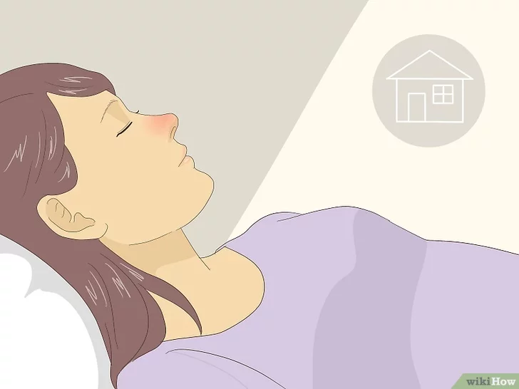

Traiter une éventuelle infection
Posté le 28 mars, 2020 à 13:40
1 Contactez votre médecin si vous pensez être atteint de coronavirus.

Si vous présentez des symptômes d'une infection respiratoire et avez voyagé en Chine, en Corée du Sud, en Italie, en Iran ou au Japon, il y a un risque que vous soyez atteint(e) d'un coronavirus. Appelez votre médecin pour lui faire part de vos symptômes et demandez-lui si vous devez vous faire examiner. Il est possible que votre médecin vous demande de venir pour un examen en laboratoire, mais il peut également vous recommander de rester à la maison pour ne pas propager l'infection. Méfiez-vous des symptômes suivants
• de la toux ;
• de la fièvre ;
• la respiration courte.
Conseil : si vous allez chez votre médecin, assurez-vous de porter un masque facial pour ne pas propager l'infection à des personnes au système immunitaire affaibli. Informez votre médecin de tout nouveau symptôme de fièvre ou de problème respiratoire.
2 Restez à la maison.
Outre le fait d'aller chez un médecin, vous ne devez pas quitter votre domicile si vous êtes malade. Vous êtes peut-être contagieux(se) et vous ne voulez certainement pas transmettre le virus à quelqu'un d'autre. Focalisez-vous sur le repos et donnez à votre corps le temps de se rétablir.
• Si vous allez chez le médecin, portez un masque facial jetable si vous en avez un. Cela empêchera la propagation des germes.
3 Couvrez votre bouche et votre nez quand vous éternuez ou toussez.

En cas d'infection au coronavirus, il y a de fortes chances que vous toussiez et éternuez beaucoup. Protégez les autres de vos germes en vous couvrant la bouche avec un mouchoir en papier ou votre manche. Cela empêchera la propagation de vos germes dans l'air.
• Essayez d'avoir une boite de mouchoirs près de vous à tout moment. Cependant, si vous n'avez pas de mouchoir, vous pouvez également éternuer dans le creux de votre coude.